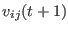
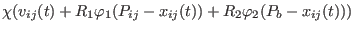
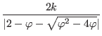
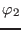

Next: ADPSO Up: Optimization Algorithms Previous: Optimization Algorithms Contents
|  |  | ||
|  | |||
It performs particularly well on real-valued problems with single single objectives. Table 3.4 lists the settings available for this optimization algorithm.
| Name | Description |
|---|---|
| max-velocity | The maximum particle velocity as a fraction of the parameter space |
| cognitive-factor | The PSO cognitive factor as described in the literature () |
| social-factor | The PSO social factor as described in the literature () |
| constriction | The velocity update constriction as described in the literature (). |
| boundary-condition | The action to take when particles reach
the parameter boundaries (None,
Stick or Bounce). The
default is Bounce. |
| boundary-damping | A velocity damping factor when the boundary
condition is Bounce. |
Jesse van den Kieboom 2014-02-26